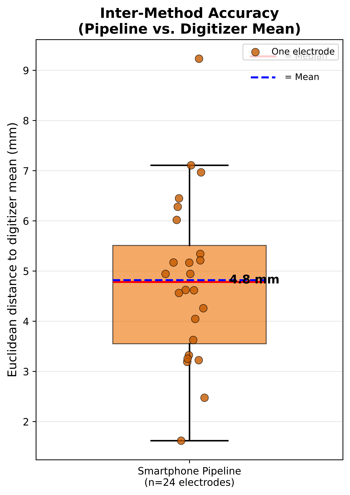
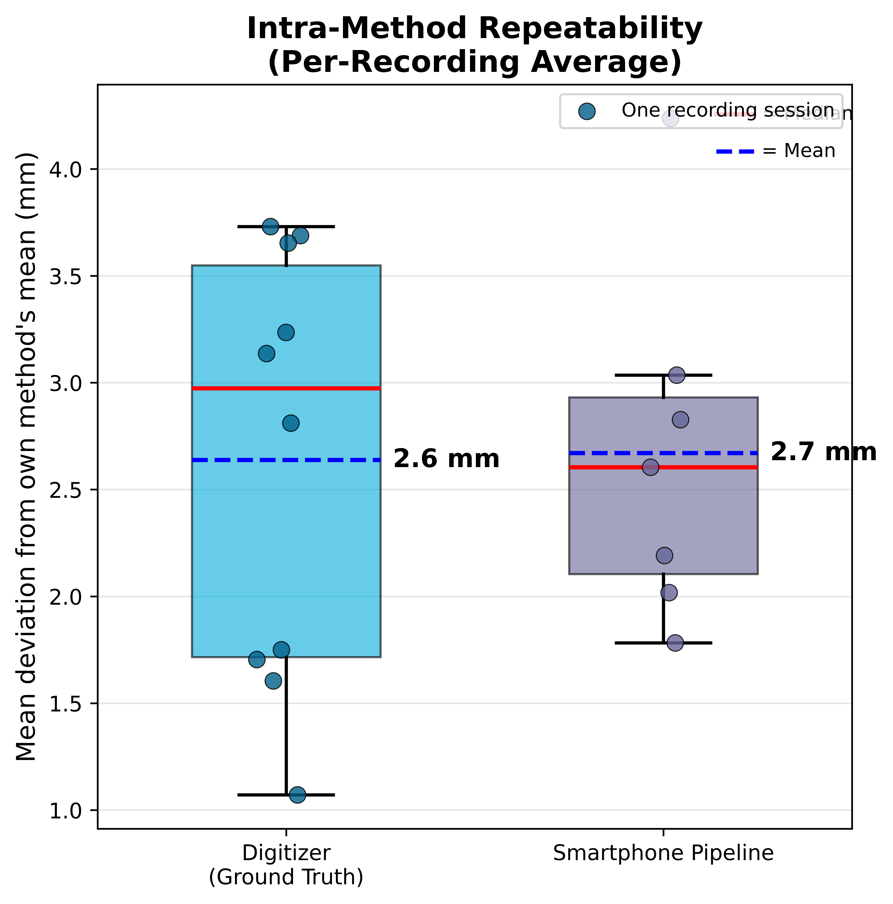
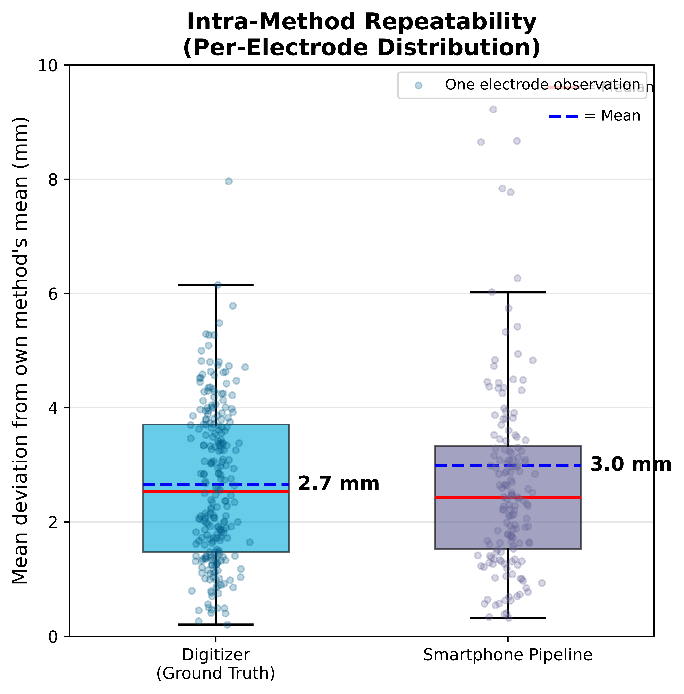

Validation Study
Validated on a styrofoam head model with a 24-channel EEG cap:
10 digitizer recordings (ground truth) vs. 10 smartphone video recordings.

Inter-Method Accuracy.
Per-electrode Euclidean distance between pipeline and digitizer mean positions.
Central and posterior electrodes show lowest errors; frontal and temporal sites
show higher errors due to limited camera coverage.

Accuracy Distribution.
Mean error 4.82 ± 1.67 mm across 24 electrodes (well-reconstructed recordings only).

Intra-Method Repeatability (Per-Recording).
Each dot represents one recording session's mean error. Pipeline 2.7 mm vs. digitizer 2.6 mm.

Intra-Method Repeatability (Per-Electrode).
Each dot represents one electrode from one recording. Full spread of individual observations.

Repeatability Comparison (Spatial Variance).
Side-by-side comparison of digitizer vs. pipeline internal consistency.